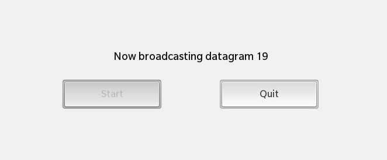

Files:
The Broadcast Sender example shows how to broadcast information to multiple clients on a local network.

In this example we'll learn how to use the QUdpSocket class to send and receive broadcast messages on the network.
The example application is splitted in two executables, broadcastsender and broadcastreceiver. While the broadcastsender allows the user to start the broadcasting of messages on the local network, the broadcastreceiver will listen on the local network for these messages and display the received ones in the UI.
The central class in broadcastsender is Sender, which encapsulates the broadcasting of the single messages and provides a property to display the current progress and status information of the broadcasting.
Whenever the user clicks the 'Start' button in the UI, the startBroadcasting() slot of the exported Sender object is invoked:
// A standard button Button { text: qsTr ("Start") // Start broadcasting datagrams on click onClicked: { title.text = qsTr ("Now broadcasting datagram") enabled = false; _sender.startBroadcasting () } }
The 'status' property of the Sender object is bound against a Label control to visualize the current progress and status information of the sender.
// A standard Label, displays sending data Label { horizontalAlignment: HorizontalAlignment.Center text: _sender.status textStyle { color: Color.White fontWeight: FontWeight.Bold fontSize: FontSize.Medium } // Plays scale animation upon sending the data animations: [ SequentialAnimation { id: animTextSize ScaleTransition { toX: 1.5 toY: 1.5 duration: 300 } ScaleTransition { toX: 1.0 toY: 1.0 duration: 300 } } ] // Play animation when text changes onTextChanged: animTextSize.play () } }
To make it more pretty, the Label will animate its size whenever its content changes.
Inside the constructor of Sender we initialize the 'status' property, the counter for the number of sent messages and a timer object. This timer object is used to trigger the broadcasting of the messages in an interval of 1 second. Additionally the QUdpSocket object is created, which encapsulates the low-level network access.
Sender::Sender(QObject *parent) : QObject(parent) { /** * Initialize the 'status' property with no data, it won't * be shown in the UI until the first datagram is sent. */ m_status = ""; // Create the timer that triggers the broadcast of the datagrams m_timer = new QTimer(this); /** * Create the UDP socket object. * Note: In opposite to a TCP socket we don't have to establish a network connection. */ m_udpSocket = new QUdpSocket(this); // Initialize the datagram counter m_messageNo = 1; /** * Create a signal/slot connection so that whenever the timer times out, the broadcastDatagram() * method is invoked. */ connect(m_timer, SIGNAL(timeout()), this, SLOT(broadcastDatagram())); }
The startBroadcasting() method, which is called when the user clicks on the 'Start' button, starts the timer, which will invoke the broadcastDatagram() slot whenever it times out.
void Sender::startBroadcasting() { // Start the timer with an interval of 1 second m_timer->start(1000); }
Inside broadcastDatagram() the actual work is done. At first the 'status' property is updated with the progress information and its change notification signal is emitted to let the UI update all property bindings where 'status' is involved in. In a second step the datagram content is assembled and afterwards it is broadcasted over the network by calling writeDatagram() on the QUdpSocket object. Additionally to the datagram content and size we also pass the broadcast IP address and the port number, which is hard-coded to 45454 in this example.
void Sender::broadcastDatagram() { // Update the status message and signal that it has changed m_status = tr("%1").arg(m_messageNo); emit statusChanged(); // Assemble the content of the datagram const QByteArray datagram = "Broadcast message " + QByteArray::number(m_messageNo); // Broadcast a datagram with the given content to port 45454 m_udpSocket->writeDatagram(datagram.data(), datagram.size(), QHostAddress::Broadcast, 45454); // Increase the datagram counter, so that the next sent datagram will have a different content ++m_messageNo; }